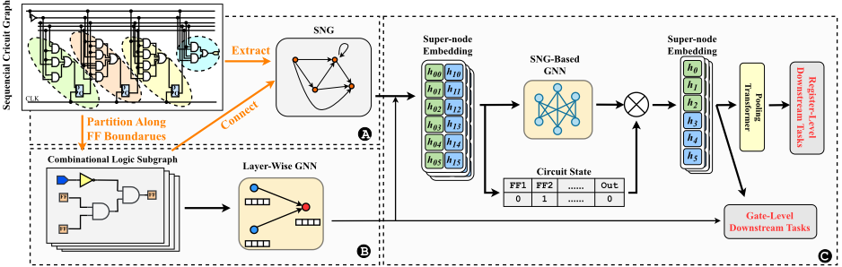
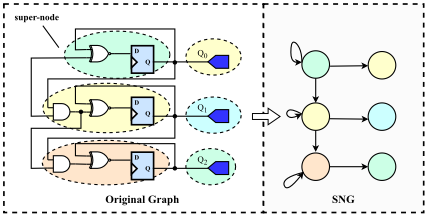
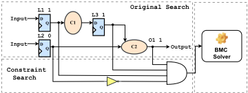
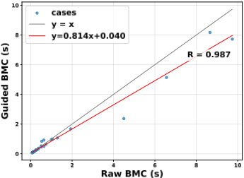

超越扁平网表：面向时序电路可扩展分析的层次化图表示学习
论文针对电路表示学习（CRL）在时序电路上的两大瓶颈——扁平门级图在工业规模网表上难以扩展（MOSS 与 DeepSeq 系列超过 10K 门即失效）、以及缺乏对寄存器级时序动态的显式建模——提出层次化图学习框架 DeepSeq3。方法上沿 FF 边界将顺序 AIG 划分为组合逻辑子图并用专用 GNN 逐个编码，再构建以子图为超级节点的 SuperNode Graph（SNG），用第二个 GNN 学习寄存器传输级结构，并以仿真统计得到的单步状态转移概率矩阵 P 与可达性矩阵 A∞ 作为状态中心化预训练监督。实验显示寄存器级 IR 任务 F1 从 DeepSeq2 的 0.3048 提升到 0.8429，预训练耗时约 4 倍缩短，动态功耗预测 MAPE 仅 4.58%；作为插件嵌入 BMC 后，难例平均求解时间从 255.03s 降至 191.11s 并能解出原本超时的实例，同时通过回退机制保证求解完备性。对团队而言，这是 AI 辅助形式验证（BMC 加速）与 ML 辅助功耗预测的直接方法学参考。
电路表示学习（CRL）在时序电路上面临两大障碍：(1) 可扩展性不足——真实工业网表可达数百万/数十亿门与连线，扁平门级消息传递遭遇内存上限、over-squashing 与超大邻域低效问题，现有方法难以端到端处理超过 10K 门的设计；(2) 缺乏寄存器级行为建模——以往模型把 FF 仅当作图中的普通节点，弱化了寄存器语义（状态算子与可达状态结构）的归纳偏置，使模型偏重局部布尔结构而低估状态何时/如何迁移；此外 BMC 等形式验证技术缺乏关于电路可达状态的先验知识，导致大设计与深 bug 检测时状态空间探索低效。
DeepSeq3 两阶段层次化框架：(1) 预处理沿 FF 边界将顺序 AIG 解耦为多个组合逻辑子图（由 FF 输出/PI 驱动、终止于下一级 FF/PO），用带 logic-0/logic-1 概率监督的 layer-wise GNN 逐子图编码；(2) 将组合子图提升为超级节点、以 FF-to-FF 边构建 SuperNode Graph（SNG），用结合注意力机制与 GRU 的第二个 GNN 编码，并引入门控状态选择机制与 Pooling Transformer 聚合全局表示。预训练以仿真统计的单步状态转移概率矩阵 P 与经传递闭包得到的可达性矩阵 A∞ 为监督（中小规模电路用 Floyd-Warshall，大规模电路用 BFS 与稀疏采样近似）。下游应用时对目标大电路做轻量 per-circuit fine-tuning，并将模型预测的高风险状态集作为逻辑约束注入增量式 BMC 求解器，约束搜索失败则回退原始搜索以保证完备性。
预训练组合子图任务：logic-1 概率预测 R²=0.9869、MAE=0.01936；logic-0 概率预测 R²=0.9916、MAE=0.01687（GCN/GAT 的 R² 显著低于 0.8，GraphSAGE 约 0.95）
寄存器级表示任务：IR 任务 F1=0.8429（DeepSeq2 仅 0.3048）；OT 任务 R=0.8413（DeepSeq2 为 0.2922）
预训练总耗时 9896 秒，对比 DeepSeq2 的 40486 秒，约 4 倍加速
动态功耗预测（Nangate 45nm 标准单元库、10k 时钟周期仿真标签）：平均 MAPE 仅 4.58%，相对精度提升约 38.4%；误差标准差 6.64% 低于 DeepSeq2 的 7.49%
Guided BMC（HWMCC 40 个实例、1000 秒时限、展开深度 20-100）：31 个易例平均加速 18.6%（回归线 y=0.814x+0.040）；9 个难例平均求解时间 191.11s 对比 Raw BMC 的 255.03s，并成功求解 Raw BMC 因超时失败的实例
可扩展性：SNG 节点数比原门级图少 1-2 个数量级，96K 节点电路的 SNG 仍可处理
数据集：来自 ISCAS'89、Opencore、ITC'99 的 3,568 个时序电路（经 ABC 优化后约 100-500 节点），训练使用 2×NVIDIA A100 GPU
区别于以往扁平门级图上的 CRL（DeepSeq/DeepSeq2 在位级逻辑上联合建模 FF 与组合逻辑、MOSS 面向 post-mapping 网表但无法处理大规模电路），DeepSeq3 首次沿 FF 边界做层次化划分并以 SNG 显式建模寄存器传输结构；监督信号从单 FF 转移概率（DeepSeq）与 FF 对状态转移相似性（DeepSeq2）的局部关系，升级为全局状态机层面的转移概率矩阵 P 与可达性矩阵 A∞，赋予模型全局时序语义；通过子图并行编码与超级节点图压缩实现 1-2 个数量级的图压缩，把可处理规模从 10K 门推进到 96K 节点；并以保证完备性的约束搜索方式将学习表示即插即用嵌入 BMC 引擎。
相关度级别：high
命中能力域：2.5 形式验证与等效性检查 | 2.7 EDA/验证自动化与 AI 辅助 | 2.3 时序与物理实现
理由：论文直接命中 2.5（以 ML 引导 BMC/model checking，且以回退机制保证正确性与完备性，属于形式属性检查的核心加速技术）与 2.7（AI 辅助验证自动化、可复用的 CRL 预训练框架与插件化部署方式）；其动态功耗预测下游任务也触及 2.3 中的 ML 辅助功耗预测。团队在 LPDDR5X/HBM4/UCIe 等 IP 交付中大量依赖 formal 属性检查与协议合规验证，BMC 在深 bug、大状态空间设计上的求解时间是真实工程痛点；论文提供的引导式 BMC 插件、寄存器级表示与预训练方法学，符合团队沉淀可复用方法学与自动化能力的方向。
建议动作：深入精读并做内部分享
arXiv:2608.28188v1 [cs.LG] 28 Aug 2026
Jingyi Zhou 1, 2, Zhengyuan Shi 1, ∗, Jiaying Zhu 1, Ziyang Zheng 1, Qiang Xu 1, ∗
2 清华大学，中国北京
1 香港中文大学，中国香港
zhoujy22@mails.tsinghua.edu.cn,{zyshi21,jyzhu24,zyzheng23,qxu}@cse.cuhk.edu.hk
一个在很大程度上以门为中心的图，将状态元件与组合逻辑混合在单一且未加区分的基底中。遗憾的是，这种框架削弱了针对寄存器语义的归纳偏置，而寄存器语义表征了状态算子以及可达状态的结构。在缺乏显式寄存器级抽象的情况下，模型往往侧重于局部布尔结构，而对状态实际在何时以及如何发生转换的表征不足。
我们在更广泛的下游任务上对 DeepSeq3 进行评估，包括门级动态功耗估计和寄存器级有界模型检测（BMC）。我们的实验结果表明，与先前方法及开创性方法相比，DeepSeq3 具有更优的可扩展性和更丰富的寄存器级语义。通过将 DeepSeq3 作为插件部署到 BMC 引擎中，该学习辅助方案能够在保持正确性的同时显著缩短求解时间。
我们将本工作的贡献总结如下：
为解决上述局限性，我们提出了 DeepSeq3——一种新颖的层次化电路表示学习框架，旨在捕获大规模时序电路的寄存器级语义。DeepSeq3 并非在扁平化的电路图上运行，而是沿触发器（FF，即寄存器）边界对每个设计进行划分，将其分为 FF 之间的组合逻辑子图以及作为超级节点的 FF 本身。每个组合逻辑子图首先由一个专为组合推理量身定制的专用图神经网络（GNN）编码为高维嵌入。随后，我们将完整设计组装为一个混合图（超级节点图，SNG），并在该图上使用另一个 GNN 进行编码，其节点特征为所生成的组合锥的嵌入。这种类似寄存器传输的抽象既压缩了组合锥内部的局部信息，又使状态变得显式。为赋予该表示时序语义，我们引入了以状态为中心的预训练方法，用于预测所诱导状态机的可达 FF 状态。
电路表示学习（CRL）为指导和优化核心电子设计自动化（EDA）任务提供了强大的范式，但其在实际应用中受到工业网表庞大规模以及未能显式建模寄存器级时序动态的阻碍。为克服这些障碍，我们提出了 DeepSeq3，这是一种新颖的分层框架，它将电路抽象为两级表示：由触发器（FF）划分的细粒度组合逻辑子图，以及建模寄存器传输结构的高层超级节点图（SNG）。双图神经网络（GNN）架构在两个层级上学习表示，捕获局部布尔逻辑和全局状态转换。至关重要的是，我们引入了一种以状态为中心的预训练方案，用于预测 FF 状态之间的可达性，从而赋予模型对时序行为的深刻理解。在大规模基准测试上的验证表明，DeepSeq3 的方法带来了卓越的可扩展性和更丰富的表示，在保证正确性的同时，将有界模型检测（BMC）的求解时间降低了 18%。
学习通用电路表示并将其部署到各类任务中，已成为电子设计自动化（EDA）领域一个颇具吸引力的方向。这一电路表示学习（CRL）范式已从门级编码器 [6, 15, 24, 25, 27] 发展到时序建模 [12, 13, 29]。迄今为止，这些进展表明，在网表上进行学习能够驱动实际的下游任务，包括功耗估计 [7, 13] 和布尔推理 [26, 31]。
尽管近期取得了进展，但为时序电路学习通用表示仍然具有挑战性，原因有二：（1）对大规模电路缺乏可扩展性。真实的工业网表可能包含数百万乃至数十亿个门和连线。扁平的、以门为中心的消息传递会触及内存上限[33]，遭受过度挤压（over-squashing）问题[27]，并在规模过大的邻域上变得低效。在实践中，这限制了可端到端处理的最大设计规模，MOSS[29] 和 DeepSeq 系列[12, 13] 都难以处理超过 1 万个门的设计。（2）忽视寄存器级行为建模。大多数先前模型仅将触发器（FF）视为
我们的代码可在 https://github.com/cure-lab/DeepSeq3 获取。
* 通讯作者
本作品采用知识共享署名 4.0 国际许可协议（Creative Commons Attribution 4.0 International License）进行许可。
DAC '26，美国加利福尼亚州长滩 © 2026 版权归所有者/作者所有。ACM ISBN 979-8-4007-2254-7/2026/07 https://doi.org/10.1145/3770743.3803902

针对组合电路的表示学习已经开展了大量研究工作。例如，DeepGate [15] 引入了基于注意力的聚合和跳跃连接来编码逻辑门之间的布尔运算，改进了测试点插入 [23] 和布尔可满足性（SAT）[16] 等下游任务。DeepGate2 [25] 引入了成对真值表监督和功能感知损失，以提升可扩展性和效率。FGNN [6] 应用对比学习来推导用于电路分类和子图定位的图级表示，而 CircuitFusion [8] 和 NetTAG [7] 也将对比学习应用于多模态电路数据以推导不变表示。此外，Polargate [17] 通过采用双极性原理进一步增强了电路表示。
电路表示学习（CRL）利用网表固有的图结构特性，取得了显著进展。包括 Grannite [32] 在内的大多数现有研究都聚焦于组合电路，其中逻辑门及其连接被建模为有向无环图（DAG）。通过将电路结构转化为图，CRL 使我们能够将复杂的电路信息高效地编码为低维向量，从而极大地赋能下游电子设计自动化（EDA）任务。
时序电路学习方面的研究仍然较少。DeepSeq [12] 和 DeepSeq2 [13] 通过联合建模触发器（FF）和组合逻辑，将 CRL 扩展到时序电路，并通过展开和顺序消息传递来学习时序依赖关系。然而，尽管这些模型行之有效，它们主要在位级逻辑上运行，缺乏对全局电路结构和连接性的显式图级建模，这限制了其捕获长程依赖的能力。最近，MOSS [29] 在映射后网表上利用基础大语言模型作为在多个 EDA 任务上训练的通用电路编码器，从而实现了跨任务知识迁移和泛化能力的提升。MOSS 与先前的 DeepSeq 系列的一个显著局限在于它们无法处理大规模电路。当应用于大规模网表时，这些方法会面临计算开销过大和内存消耗过多的问题。
近期研究已探索了多种加速有界模型检验（BMC）的方法。例如，一些方法通过修改控制流图（CFG）[20] 来在无需展开的情况下处理环路，另一些方法则将捷径集成到 BMC 展开过程中以实现加速 [10]。机器学习辅助的框架则聚焦于布尔可满足性（SAT）求解，将神经表示集成进来以捕获电路的结构或功能特性 [34]。然而，以往关于 BMC 的工作仅依赖默认启发式方法，缺乏提供电路可达状态先验知识的能力。这一根本性局限导致状态空间探索效率低下。
BMC 是一种被广泛采用的形式化验证技术，用于检测时序电路中的性质违例 [4]。BMC 并不构建完整的符号模型；相反，它在有界数量的时间帧上展开电路，并将可达性问题编码为一个 SAT 实例。这种方法在缺陷检测方面具有很高的效率，但在应用于大型工业设计时可能面临令人难以承受的时间开销。
图 1 展示了所提出的面向时序与-反相图（AND-Inverter Graph, AIG）的两阶段框架的整体运行流程。在预处理阶段，我们将组合逻辑与时序元件（触发器，FF）解耦，形成多个独立的组合子图。随后，在每个子图内应用逐层的图神经网络（GNN），通过从输入/前驱传播信息来学习节点级表示。在第二阶段，我们将整个电路抽象为超级节点图（SNG），其中每个子图充当一个超级节点。接着，在该 SNG 上采用另一个 GNN，由单步转移概率矩阵和可达性矩阵共同监督，以捕获结构依赖关系并学习增强的 FF 嵌入。所学到的嵌入既可直接用于门级任务，也可通过基于 Transformer 的池化模块进行聚合，从而形成最终的电路级表示。
为了学习寄存器级行为的全局行为，我们提出了一种高效且鲁棒的层次化图学习框架。我们首先通过所提出的超节点划分方法构建超节点图（SNG），该方法不仅显著减少了节点数量，还确保了触发器（FF）之间信号传播的所有信息得以保留。接下来，我们定义电路状态，随后引入转移矩阵作为 SNG 表示学习的新型监督信号。最后，我们为模型设计了门控机制和基于 transformer 的池化机制，以捕获其时序语义。
3.3.1 SNG 构建方法。在获得所有组合子图的嵌入之后，我们构建 SNG。SNG 作为一个抽象的寄存器级图，用于捕获时序块之间的高阶依赖关系。
具体的构建方法如下（图 2）：
组合逻辑块被提升为节点模块，并使用 FF 到 FF 的边构建时序流图。每个超节点表示一个局部化的时序作用域，超边共同构成一个时序依赖有向图（DG），该图近似刻画了跨时钟周期的状态传播图。随后，可以使用图神经网络（GNN）和循环神经网络（RNN）对该图进行进一步编码，以实现对电路时序结构的更高层次理解。

3.3.2 电路时序建模。先前的工作 DeepSeq 和 DeepSeq2 采用了不同形式的监督信号来学习电路的时序特性 [12, 13]。DeepSeq 利用单个 FF 的转移概率作为监督信号，DeepSeq2 进一步引入了 FF 对之间的状态转移相似性作为监督，以捕获电路的动态相关性。然而，这两种方法都存在一个共同的局限：它们主要关注局部状态关系，无法捕获电路的全局时序结构。考虑一个简单的循环
只能循环遍历有限的全局状态集合。仅监督单个 FF 的转移能够捕获局部相关性（例如，𝐿 1 跟随 𝐿 2），但无法反映所有 FF 之间的全局循环依赖和长期约束。
为了解决这些细微问题，我们将其时序运行视为一个有限状态机（FSM）。设电路包含 𝑛 个 FF 和 𝑚 个输出。我们将系统在时刻 𝑡（例如第 𝑡 个时钟上升沿）的状态向量形式化定义为：
其中 𝑞 𝑖 ( 𝑡 ) ∈ { 0 , 1 } 表示第 𝑖 个 FF 在时刻 𝑡 的逻辑值，𝑦 𝑗 ( 𝑡 ) ∈ { 0 , 1 } 表示第 𝑗 个输出端口的逻辑值。因此，电路的完整状态空间由 𝑆 = { 0 , 1 } 𝑛 + 𝑚 给出，其基数为 | 𝑆 | = 2 𝑛 + 𝑚 。电路的时间演化被形式化为一个离散时间马尔可夫链。其状态转移由状态转移概率矩阵 P ∈ R | 𝑆 | × | 𝑆 | 描述，其中元素 𝑃 𝑖 𝑗 定义为从状态 𝑠 𝑖 转移到状态 𝑠 𝑗 的概率：
该矩阵刻画了由输入激励和内部逻辑驱动的状态转移分布。
在计算矩阵 P 之后，我们定义无穷步可达矩阵 A ∞ 来描述长期演化：
矩阵 A ∞ 描述状态 𝑠 𝑗 是否能在任意数量的时间步内从状态 𝑠 𝑖 到达。形式化地：
矩阵 P 和 A ∞ 共同刻画了电路的时间动态特性。将二者作为监督信号引入，可以增强模型对时间演化的理解，使其不仅能学习局部转移，还能学习电路动态行为的全局组织结构。
3.3.3 真值生成。我们采用基于仿真的方法对矩阵 P 进行快速近似。对于每个状态转移 𝑆 𝑖 → 𝑆 𝑗 ，我们执行多次仿真以记录从状态 𝑆 𝑖 转移到 𝑆 𝑗 的频率。统计有效输入向量的数量 𝑁 𝑖 → 𝑗 ，并用总输入空间大小 | S | 对其进行归一化，从而计算转移概率 𝑝 𝑖 𝑗 = 𝑁 𝑖 → 𝑗 | S | 。对于可达状态数量有限的小型和中等规模电路，我们直接计算完整的转移矩阵 P 以保证精度。为处理大规模电路，我们避免枚举所有可能的状态对，而是从仿真轨迹中采样一部分源状态 𝑆 𝑖 ，并仅记录其中实际发生的转移。这样得到的稀疏转移矩阵 P 能够捕捉主要的转移模式，同时将计算和内存开销控制在可管理的范围内。
由于实际验证过程也只探索部分可达的 FF 状态而非完整的 2 𝑛 + 𝑚 空间，我们自然地对这些实际相关的区域进行采样，从而避免全局状态爆炸。
矩阵 A ∞ 是通过对马尔可夫链的矩阵 P 施加传递闭包而得到的。首先将 P 转换为布尔邻接矩阵 A，其中当且仅当 𝑃 𝑖 𝑗 > 0 时 A 𝑖 𝑗 = 1。随后对矩阵 A 进行初始化，将所有对角线元素置为 1，以确保自可达性。类似地，对于小规模和中等规模电路，我们采用计算复杂度为 𝑂 ( 𝑁 3 ) 的 Floyd-Warshall 算法[9, 30]。迭代更新 A [ 𝑖, : ] ← A [ 𝑖, : ] ∨ A [ 𝑘, : ] 确保了：若状态 𝑖 可达 𝑘，且 𝑘 可达 𝑗，则 𝑖 可达 𝑗。对于大规模电路，我们改用广度优先搜索（BFS）来缓解计算复杂度。从源状态 𝑆 𝑖 出发，利用一个队列来探索所有可达状态，并相应地更新 A ∞[ 𝑖 ] [ 𝑗 ] 的值。遍历全部 𝑁 个状态的总复杂度为 O ( N 2 + NE )。因此，在 𝐸 ≪ 𝑁 2 的大规模稀疏场景中，有效复杂度可近似为 O ( N 2 )。
3.3.4 模型预训练。我们在 SNG 上执行全局特征建模，使模型能够捕捉电路的结构依赖关系与时序演化模式。电路被表示为 𝐺 = ( 𝑉, 𝐸 )，其中每个超级节点 𝑣 𝑖 ∈ 𝑉 表示一个组合逻辑子图，边 𝐸 表示各触发器（FF）之间的时序连接关系。每个节点的初始特征向量 ℎ 0 𝑖 和 ℎ 1 𝑖 由前一阶段学习到的组合逻辑子图嵌入得到。
在超级节点层面，第 l 轮中每个超级节点的更新形式定义为：
其中 𝑁 ( 𝑖 ) 表示节点 𝑖 的时序前驱集合。
为了刻画电路状态对时序行为的影响，我们引入了一种门控选择机制。在训练过程中，模型同时维护两组状态相关的节点嵌入：
对于给定的状态向量 𝑠 = [ 𝑠 1 , 𝑠 2 , . . . , 𝑠 𝑁 ] ∈ { 0 , 1 } 𝑁 ，激活的表示按如下方式选择：
模型在初始状态 𝑠 𝑖 和目标状态 𝑠 𝑗 下分别计算节点嵌入，得到精炼后的门级表示 ℎ 𝑖 ( 𝑠 𝑖 ) 和 ℎ 𝑖 ( 𝑠 𝑗 ) 。为了捕捉从 𝑠 𝑖 到 𝑠 𝑗 的状态转换特征，这两种表示在节点层面进行拼接，形成组合节点表示 ℎ ′ 𝑖 = concat [ ℎ 𝑖 ( 𝑠 𝑖 ) , ℎ 𝑖 ( 𝑠 𝑗 )] 。随后，这些组合节点表示通过池化 Transformer（PT）[27] 进行聚合，该方法通常使用一个专用的 [CLS] 标记来获得全局电路表示 H：
该全局嵌入 H 综合了电路的结构拓扑以及与从 𝑠 𝑖 到 𝑠 𝑗 的转移相关联的状态变化模式。接下来，我们使用多层感知机（MLP）将全局嵌入映射到输出空间，以预测单步状态转移概率矩阵 P 和可达性矩阵 A ∞ 。这些优化后的嵌入将作为后续 EDA 任务的输入特征。
更新函数 aggr 𝑘 被实例化为一种结合注意力机制与门控循环单元（GRU）的结构。
在本节中，我们详细阐述模型预训练结果并评估其可扩展性（见第 4.2 节）。随后，我们将 DeepSeq3 框架应用于门级任务和寄存器级任务：功耗估计（第 4.3 节）和有界模型检测（BMC）（第 4.4 节），以展示其能力。
数据集。我们基于 ISCAS'89[3]、Opencore[19] 和 ITC'99[5] 基准测试集构建了一个包含 3,568 个时序电路的数据集。所有电路均使用 ABC 工具 [2, 18] 处理为时序 AIG 格式。经过优化后，每个电路包含约 100-500 个节点。
评估指标。对于子图学习阶段（Stage1），我们使用平均绝对误差（MAE）和决定系数（R 2 Score）来评估 logic-0 与 logic-1 概率预测。总损失 L total 定义为 logic-1 概率损失（L 1）与 logic-0 概率损失（L 0）的均值。
实现细节。所有模型均使用 128 的隐藏维度，并采用 3 层 pooling transformer 来获取全局表示。对于所有下游任务，最终的图嵌入由一个 3 层多层感知机（MLP）进行处理。我们使用学习率为 1 × 10 - 4 的 Adam 优化器，并训练 40 个 epoch。所有计算与模型训练均在 2 × NVIDIA A100 GPU 上进行。
对于 SNG 阶段（Stage2），我们评估：
超越扁平网表：面向时序电路可扩展分析的层次化图表示学习
| Model. | Stage 1: Combinational Subgraph.L 1.R 2 | Stage 1: Combinational Subgraph.L 1.MAE | Stage 1: Combinational Subgraph.L 0.R 2 | Stage 1: Combinational Subgraph.L 0.MAE | Stage 2: Register-Level Evaluation.IR.Recall | Stage 2: Register-Level Evaluation.IR.F1 | Stage 2: Register-Level Evaluation.IR.Accuracy | Stage 2: Register-Level Evaluation.OT Time (s).R MAE | Stage 2: Register-Level Evaluation.OT Time (s). |
|---|---|---|---|---|---|---|---|---|---|
| GCN[14] | 0.7996 | 0.0785 | 0.7910 | 0.0902 | - | - | - | - - | - |
| GAT [28] | 0.6073 | 0.1117 | 0.5573 | 0.1156 | - | - | - | - - | - |
| GraphSAGE[11] | 0.9552 | 0.0367 | 0.9565 | 0.0403 | - | - | - | - - | - - |
| HOGA-3 [6] | 0.6066 | 0.1179 | 0.6038 | 0.1186 | - | - | - | - - | - |
| DeepSeq2[13] | - | - | - | - | 0.2986 | 0.3048 | 0.6714 | 0.2922 0.3571 | 40,486 |
| DeepSeq3 w/o Stage1 | - | - | - | - | 0.8324 | 0.7752 | 0.9467 | 0.7588 0.0072 | - |
| DeepSeq3 w/o OT | - | - | - | - | 0.8406 | 0.8249 | 0.9478 | 0.6442 0.0201 | - |
| DeepSeq3 w/o IR | - | - | - | - | 0.0274 | 0.0341 | 0.8229 | 0.8695 0.0048 | - |
| DeepSeq3 | 0.9869 | 0.0193 | 0.9916 | 0.0168 | 0.8503 | 0.8429 | 0.9564 | 0.8413 0.0049 | 9,896 (3,845+6,051) |
| Model. | Stage 1: Combinational Subgraph.L 1.R 2 | Stage 1: Combinational Subgraph.L 1.MAE | Stage 1: Combinational Subgraph.L 0.R 2 | Stage 1: Combinational Subgraph.L 0.MAE | Stage 2: Register-Level Evaluation.IR.Recall | Stage 2: Register-Level Evaluation.IR.F1 | Stage 2: Register-Level Evaluation.IR.Accuracy | Stage 2: Register-Level Evaluation.OT Time (s).R MAE | Stage 2: Register-Level Evaluation.OT Time (s). |
对于 Stage1，由于我们的子图编码器采用了与 DeepGate 系列 [25] 相同的逐层设计，我们聚焦于通用 GNN，以展示逻辑感知归纳偏置的必要性。因此，我们选择 GCN[14]、GAT[28]、GraphSAGE[11] 和 HOGA-3[6] 作为基线。对于 Stage2，鉴于 MOSS[29] 主要关注工艺映射后的网表，我们选择当前面向与或反相图（AIG）的最先进方法 DeepSeq2 作为主要基线。我们还设置了消融实验：去除组合子图学习的 DeepSeq3 记为 DeepSeq3 w/o Stage1，去除 IR 监督的 DeepSeq3 记为 DeepSeq3 w/o IR，去除 OT 监督的 DeepSeq3 记为 DeepSeq3 w/o OT。结果汇总于表1中。
本节给出详细的对比分析，以验证 DeepSeq3 框架的时序语义捕获能力。
组合子图上的性能。结果表明，DeepSeq3 定制的 GNN 在组合逻辑中展现出更强的逻辑推理能力。在逻辑1概率预测任务中，DeepSeq3 取得了 0.9869 的 𝑅² 和 0.01936 的平均绝对误差（MAE）。类似地，在逻辑0概率预测中，它达到了 0.9916 的 𝑅² 和 0.01687 的 MAE。相比之下，GCN 和 GAT 等通用 GNN 模型的 𝑅² 值显著低于 0.8。值得注意的是，GraphSAGE 模型在该任务中取得了约 0.95 的较高 𝑅²。
消融研究。为了量化各组件的贡献，我们进行了消融研究。结果证明了子图表示和联合监督的有效性。DeepSeq3 w/o Stage1 导致 IR F1 分数下降至 0.7752。DeepSeq3 w/o IR 取得了最高的 𝑅 值（0.8695），但其 F1
寄存器级表示上的性能。在 Stage2 的寄存器级任务中，我们的模型优于 DeepSeq2。在 IR 任务中，DeepSeq3 的 F1 为 0.8429，而 DeepSeq2 仅达到 0.3048。在 OT 任务中，DeepSeq3 的 R 值达到 0.8413，显著高于 DeepSeq2 的 0.2922。SNG 表示的性能提升证实了我们的框架成功学习到了更丰富、更具可扩展性的寄存器级表示。
分数下降至 0.0341。相反，DeepSeq3 w/o OT 保持了较高的 F1 分数（0.8249），但导致 𝑅 值下降至 0.6442。
效率对比。最后，DeepSeq3 在效率上较先前模型有所提升。DeepSeq3 的总预训练成本为 9896 秒，而 DeepSeq2 为 40486 秒，实现了约 4 倍的加速。这一优势归因于两个因素：Stage1 将特征提取转变为沿触发器（FF）边界完全可并行化的任务，以及 SNG 构建通过将子图抽象为超级节点实现了极致的图压缩。
问题陈述。集成电路的总功耗主要由两部分组成：静态功耗和动态功耗。动态功耗由电路的开关活动引起，在芯片工作时不可或缺。因此，在设计阶段开发快速且准确的动态功耗预测技术，是现代超大规模集成电路（VLSI）系统面临的一项关键挑战。
本节评估 DeepSeq3 表示在动态功耗估计方面的有效性，以验证时序电路表示的通用性。
动态功耗估计流程。为确保评估的实用性与普适性，我们采用 Nangate 45nm 标准单元库作为工艺映射目标，并仿真 10k 个时钟周期以确定动态功耗真值。该任务包含一个多层感知机（MLP）层，将 DeepSeq3 输出的 SNG 节点嵌入（即增强后的 FF 表示）与逻辑门嵌入映射到动态功耗预测。
结果。结果如表 2 所示，功耗值以毫瓦（mW）为单位给出。DeepSeq3 在动态功耗估计方面优于 DeepSeq2。例如，DeepSeq3 的平均绝对百分比误差（MAPE）均值仅为 4.58%。这一结果相当于相对准确度提升了约 38.4%。与 DeepSeq2 相比，DeepSeq3 的结果还表现出更好的鲁棒性。DeepSeq3 误差的标准差（𝜎）为 6.64%，显著低于 DeepSeq2 的 7.49%。这一准确度提升源于 DeepSeq3 中引入的显式全局时序动态监督，而这一特性在先前的方法中并未被显式建模。
| Circuit. | Nodes. | Power. | DeepSeq2.Power | DeepSeq2.Error | DeepSeq3.Power | DeepSeq3.Error |
|---|---|---|---|---|---|---|
| ptc | 2,024 | 0.0677 | 0.0710 | 4.89% | 0.0717 | 5.92% |
| noc_router | 5,246 | 0.2184 | 0.2288 | 4.76% | 0.2196 | 0.55% |
| mem_ctrl1 | 10,733 | 0.3148 | 0.3800 | 20.70% | 0.3641 | 15.66% |
| ac97_ctrl | 14,004 | 0.5512 | 0.5391 | 2.24% | 0.5517 | 0.09% |
| pll | 18,208 | 0.7787 | 0.7428 | 4.61% | 0.7735 | 0.67% |
| Avg . ± std . | Avg . ± std . | Avg . ± std . | Avg . ± std . | 7.44% ± 7.49% | 7.44% ± 7.49% | 4.58% ± 6.64% |
| Circuit. | Nodes. | Power. | DeepSeq2.Power | DeepSeq2.Error | DeepSeq3.Power | DeepSeq3.Error |

This section validates the direct applicability of DeepSeq3's learned high-level temporal representation in formal verification.
Scalable Fine-Tuning for Large-Scale Circuits. Our approach addresses this via a lightweight, per-circuit fine-tuning step. When targeting a new, large circuit for BMC, we first apply the hierarchical partitioning to generate its SNG. Critically, the SNG's node count is one to two orders of magnitude smaller than the original gate-level graph. This graph compression is the key to scalability: even for a massive 96K-node circuit, its SNG remains manageably small. We then fine-tune the pre-trained DeepSeq3 model on this specific circuit. The ground truth is generated using sampling-based approximation of the P and A ∞ matrices (Section 3.3.3).
Problem Statement. BMC is a crucial formal verification technique that encodes the circuit's reachability property as a SAT problem. However, current approaches lack effective guidance for optimizing reachability search and generating high-quality initial solving assignments, which severely limits its efficiency for largescale and deep bug detection.
GuidedBMCProcess. After fine-tuning, we integrate DeepSeq3 representations to guide the search process of an incremental BMC solver. In the standard flow, the SAT solver performs a complete and unconstrained search for the target property ¬ 𝑃 . Our approach, in contrast, leverages DeepSeq3's output to predict a high-risk state set 𝑆 𝑖 for the unrolling depth 𝑖 , which is most likely to contain a counterexample satisfying the formula ¬ 𝑃 . As Fig 3 shows, the solver then executes a constrained search over ¬ 𝑃 ∧ 𝐿 𝑖 , where 𝐿 𝑖 is the logical constraint derived from the predicted set 𝑆 𝑖 . This mechanism enables the solver to prioritize the exploration of a narrow subspace 𝐿 𝑖 and effectively prune large parts of the search space irrelevant to the property violation. If this constrained search fails, the solver falls back to the original search, thereby ensuring the completeness of the method. Notably, to prevent overly precise guidance from frequently rolling back, we only predict a subset of the overall FF values.
Data. We test DeepSeq3-guided BMC (Guided BMC) against Raw BMC (using ABC's default heuristics) on 40 randomly selected BMC instances from HWMCC benchmarks with the 1000s time limitation set to 1000 seconds and the maximum unrolling depth varied between 20 and 100. Of the total instances in the dataset, 31 are solvable within 10 seconds and thus regarded as easy, while 9 are categorized as hard.

| Circuit. | Nodes. | Raw BMC[2].Time (s) | Guided BMC.SolveTime (s) | Guided BMC.InferTime (s) | Guided BMC.Total (s) |
|---|---|---|---|---|---|
| eijks208o | 172 | 15.63 | 11.97 | 0.74(0.5+0.24) | 12.71 |
| pdtvispeterson | 712 | 22.92 | 18.27 | 1.01(0.75+0.26) | 19.28 |
| pdtvisgigamax0 | 1,107 | 13.99 | 14.61 | 2.25(2.00+0.25) | 16.86 |
| float_reg_b1_1071 | 2,066 | 11.02 | 10.93 | 1.30(1+0.30) | 12.23 |
| float8 | 10,590 | 71.05 | 61.37 | 7.81(7.5+0.31) | 69.18 |
| bj08amba5g62 | 20,009 | 133.43 | 130.83 | 1.25(1+0.25) | 132.8 |
| pc_sfifo_3+token_ring.04 | 56,611 | Timeout(1000) | 946.4 | 6.30(6+0.30) | 952.7 |
| AllInterval-019 | 63,156 | Timeout(1000) | 458.72 | 10.12(10+0.24) | 468.64 |
| Problem04_label27 | 95,960 | 27.21 | 20.74 | 15.33(15+0.33) | 36.07 |
| Avg. | 255.03 | 185.98 | 5.13 | 191.11 |
| Circuit. | Nodes. | Raw BMC[2].Time (s) | Guided BMC.SolveTime (s) | Guided BMC.InferTime (s) | Guided BMC.Total (s) |
Results. The results shows that Guided BMC surpasses Raw BMC in efficiency. Fig 4 plots the solving times for 31 easy instances. The graph excludes the model inference time to focus on the pure speedup. It achieves an average speedup of 18 . 6% (based on the regression line 𝑦 = 0 . 814 𝑥 + 0 . 040). While the inclusion of model inference may increase runtime on easy cases, we do not target such trivial instances. Our interest lies in the difficult cases where BMC is slow, and for those our method delivers clear and consistent speedup. Table 3 lists 9 difficult cases. It revelas that Guided BMC shows superior efficiency with an average total solving time of 191 . 11 𝑠 compared to Raw BMC's average of 255 . 03 𝑠 , and successfully solves instances that Raw BMC fails due to timeout.
我们提出 DeepSeq3，以解决时序电路 CRL 中的两个关键挑战：可扩展性受限与时序建模不足。通过沿 FF 边界将电路划分为 SNG 并应用以状态为中心的预训练，DeepSeq3 能够高效地大规模捕获寄存器级语义。实验验证了其优势，为工业环境中的语义丰富的时序分析奠定了坚实基础。未来工作可探索将其时序表示用于重定时、状态编码以及高级形式化验证等任务。
超越扁平网表：面向时序电路可扩展分析的层次化图表示学习